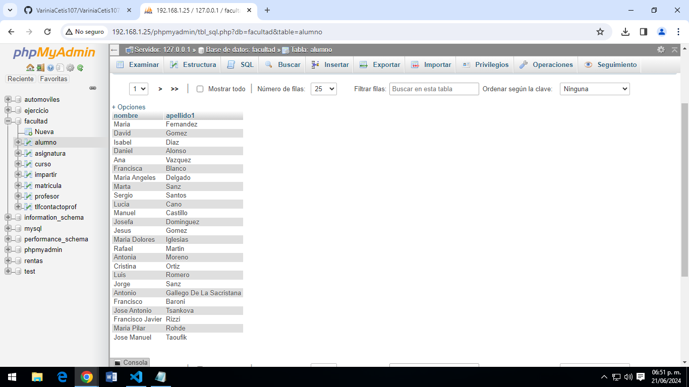
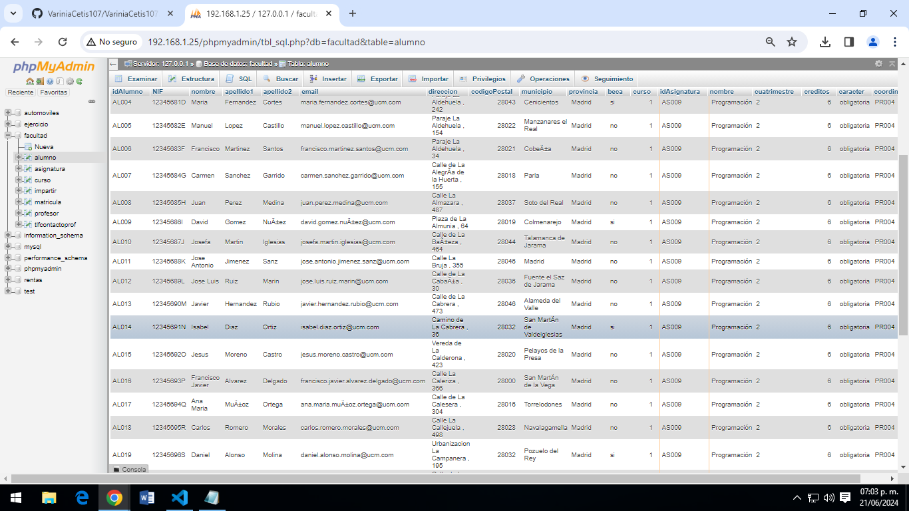
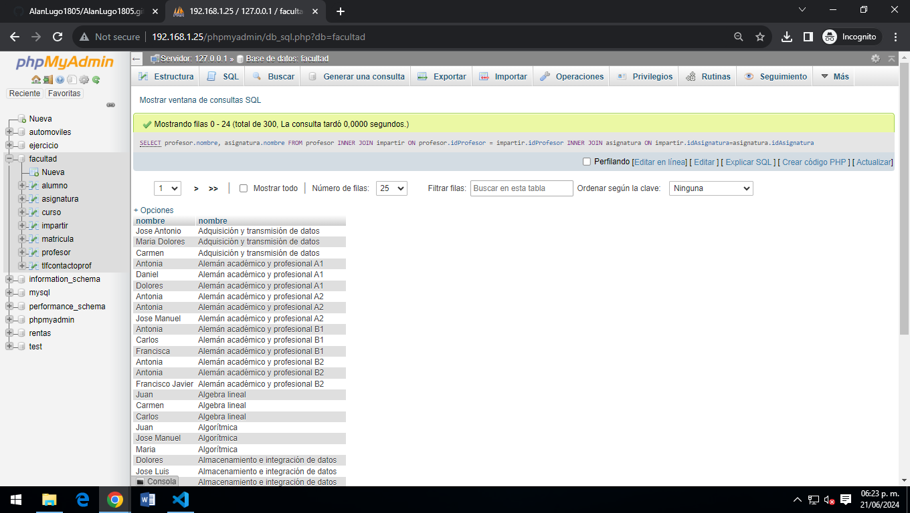

1-SELECT * FROM alumno;
Obtener el listado de todos los alumnos de la facultad

Obtener el listado de todos los alumnos de la facultad
Obtener el listado de curso y las asignaturas que tienen

Obtener el listado (nombre apellidos) de alumnos que tengan becas
Obtener el listado de proesores (nombre apellidos y su numero de contacto)

Obtener el listado de alumnos (todos los campos) que estan inscritos ala asignatura de programacion
Obtener el listado de alumnos (todos los campos) que estan inscritos ala asignatura de programacion
Obtener el listado de alumnos (todos los campos) que estan inscritos ala asignatura de programacion

Obtener el listado que les da clase el profesor id PR048 (Jose Manuel), sin importar en que asignatura esté inscrito

Obtener listado de cursos, con asignatura y el maestro que las imparte

Obtener listado de alumnos, con asignaturas que cursa, profesor que la imparte y curso al que pertenece

Varinia Yulianna Manjarrez Valencia